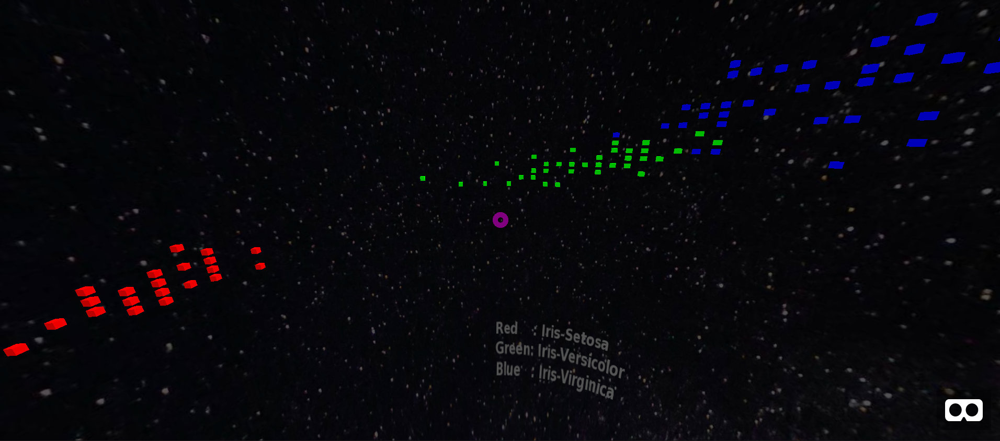
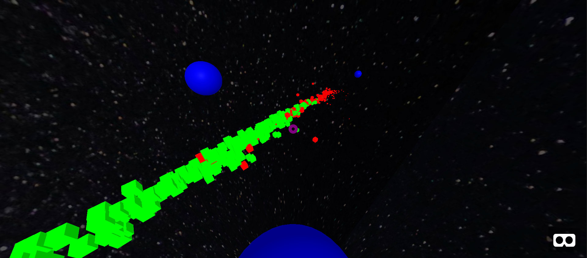

This project stemmed out of the need to find a way to make data science engaging.
Disciplines such as Architecture, Engineering and Design have an extremely exciting industry that offers plenty opportunities for engagement. Architects can simply showcase their work via a model building, Engineers can talk about their latest aircraft engine innovation via impressive engine cutouts and Designers can exhibit their work in galleries, let alone shows that put their creation at the centre of the audience's attention
The common denominator of all these disciplines is that they are dealing with physical artifacts. Artifacts that human beings can experience through their senses and more importantly by touching, grabing, squeezing, flicking, rubbing, pulling, pushing, opening and closing and a multitude of other ways of interacting with an artifact so as to develop experience.
Experience, is a very important keyword for this project. As human beings, we learn by experience. For us, getting up from a chair or grabbing a mug of coffee the right way, are activities we do not think twice about. We have also been performing them for a very long time, being taught from a very young age how to walk, talk and of course grabbing a mug. The difficulty and complexity of these tasks becomes apparent when we, as human beings, try to build a machine that performs them. That, is when the beast unfolds its body in all its glory and that, is when we understand what walking, really means.
So, imagine someone having to talk to an audience about Data Science in an exciting and engaging way. Where are the models that the audience can interact with, to develop experience, to realise what it is that you are talking about to them? How can we, make that audience understand that in Data Science, we also deal with objects, models of objects and we also do some squeezing and grabbing and pulling and turning upside down and putting things inside other things and moving stuff from this place to the other...but in our world, these are abstract entities.
That is where Virtual Reality (VR) comes in...
The key idea of this project was to place a viewer at the centre of a feature / vector space and let them see how does a dataset looks like.
To achieve this, a set of two visualisation 'demos' at two different levels of complexity were created. The first, is using Ronald Fisher's Iris Flower data set and the second is using the Breast Cancer Wisconsin Dataset. Both of these are obtained
The purpose of the first dataset is to orient and familiarise a viewer with this "new" way of looking at data. During the demo, the user is embedded in an environment with three sets of coloured cubes. Each set of cubes corresponds to a flower family (iris-virginica, setosa, versicolor).
This is a very simple environment where the rotation around the viewer corresponds to the Sepal Length and the elevation corresponds to the Sepal Width. Just by using these two characteristics from the whole dataset, we can see approximately 150 flowers in just one view. The other thing that this demo helps us see are shapes (or patterns) in the data, by the way that cubes representing flowers from the same family, tend to be grouped together.
These are exactly the shapes that Data Scientists are trying to describe using statistics / Machine Learning. At this point, this is only a hint and it becomes more apparent at the next demo.
It is worth noting here that by the end of the first demo the viewer should have become familiar with what the space represents, the way that each marker corresponds to a data item from the dataset and the fact that colour and shape represent different groups within the same dataset.
Once they, it is time to move on to something a bit more complex...
The purpose of the second demo is to demonstrate a more practical and realistic aspect of the same visualisation technique. This time, we are using a health related dataset, the Breast Cancer Wisconsin dataset that contains data from 560 breast cancer cases.
Each breast cancer case is decribed by a set of 32 numbers, vastly more than the mere 2 characteristics that were used to show the separation of different flower families in the Iris dataset. This poses a data visualisation challenge when trying to squeeze 32 dimensions down to 3 that are available in the visualisation environment and more information is provided about the data processing behind the final outcome, further below. But, at this point, it is important to understand that what we experience is the result of some processing on the original dataset
Once viewers are inside this environment they notice three things. Green and red cubes and a set of blue spheres. This time, each cube corresponds to a patient suffering from some type of breast cancer. Just as before, red and green cubes correspond to different groups of data items within the dataset. The green cubes correspond to patients that suffer from benign forms of breast cancer, while the red cubes correspond to patients that suffer from malignant forms of breast cancer that pose a threat to human life.
This dataset may present itself as a seemingly long line of densenly packed cubes in space. But, it is not exactly a line and this is what these blue spheres are there for. Because of the size of the dataset, it was impossible to appreciate its form from just one viewpoint. Therefore, different viewpoints were added by inserting markers at different positions within the dataset. Once the viewer focuses their gaze on one of these blue spheres they are automatically 'teleported' to a new vantage point in space. In this way it is possible to witness the exact shape of the benigng and malignant sub-groups of breast cancer within the dataset.
Specifically, by positioning the viewer on the marker that is closer to the benign forms of cancer looking downwards, it is possible to see this long line of cases "curving" slightly to the left and downwards. By positioning the viewer on the marker that is approximately at the middle of the dataset, it is possible to see the overlap between benign and malignant cases. These are 'difficult' to categorise cases, even in the presence of all this data.
Similarly to the first demo, by the end of this one, the viewers should start developing an association between 'patterns in the data' and what this means for 'reality'. In this case, different patterns in the data represent different forms of cancer.
The same concept can be extended to any type of dataset and is more formally known as Topological Data Analysis
Once the model is inside A-Frame, it is possible to take advantage of the built-in stereo viewing capabilities, to depict the scene on a Google cardboard or any other type of mobile phone based headset.
In both of the above cases, Blender and python were used to import the data files in the generic Coma Separated Value (CSV) format, in the 3D environment.
Blender is an incredibly versatile and useful piece of software which is increasingly being used in Data Visualisation, for really big datasets. Its ability to be programmed via Python and re-use the Python packages already installed in a system, means that you don't have to change your existing data processing pipe line but in addition provide it with an incredibly powerful graphic output. Blender can produce static and animated high quality visualisations, on the fly and extremely high quality renderings via external renderers.
Apart from Blender, the data processing for the second demo that involves the Breast Cancer Wisconsin dataset was done in Weka and Python. Specifically, two techniques were used to reduce the dimensionality of the dataset: Feature Selection via Infomax (performed in Weka), this helped in reducing the number of features down to 10. To find a representation that could be used in 3 dimensions, Multidimensional Scaling was applied on the reduced dataset.
The combined effect of these two techniques was that the shape of the two clusters, representing the benign and malignant breast cancer cases, was preserved as much as possible from the 32 original dimensions, down to the top 3 that were selected to depict the dataset in VR.
Full code and Blender scene files are available in the src/ directory of the project on Github.